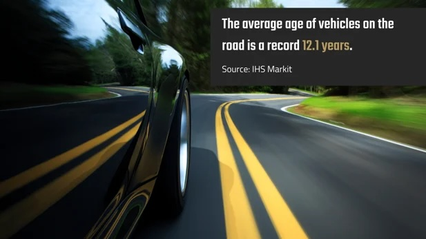

As global shortages create a volatile automotive market, dealerships have to rely on a great inventory management process to keep their stock fresh.
By KeyTrak
4 min. read
The average price of a new vehicle in the United States recently hit a record high of over $47,000 — nearly $10,000 more than two years ago thanks to current global shortages and high demand. This has resulted in an overall drop in new car sales in favor of used car sales, as many customers choose to save money purchasing older vehicles.
There’s never been a more profitable time to sell a vehicle than now, with many vehicles selling before they even touch the lot.
So why should you worry about properly managing your aging inventory when business is booming?
Because this high demand won’t last and your dealership could find itself stuck with a rapidly depreciating inventory when global shortages end. While your sales strategy has likely adapted to ride the profit waves of these abnormal market conditions by creating waitlists and increasing your used car stock, your dealership may be unprepared for a return to normal market conditions.
Establishing procedures now to properly monitor your inventory plays a vital role in keeping your dealership agile in volatile market conditions. Doing so allows you to quickly adjust your marketing strategy and your stock inventory to better appeal to changing consumer behaviors.
With new cars selling out faster than they can be made, many dealers are quick to snap up trade-in deals to bulk up their used vehicle stock. Customers are able to get more value in these transactions as dealers are more willing to pay higher prices for used cars. This is only possible because of the overall rise in vehicle prices, ensuring dealers can maintain their profit margins despite paying more.
But what do you think will happen when the market value for these vehicles returns to normal before you sell them?
When the market shifts back to normal, your dealership could be stuck with an inventory filled with older vehicles losing their value quickly. Knowing your inventory is key to quick and informed thinking that allows you to plan optimal sales and marketing strategies for pushing the sale of aging stock as quickly as possible to minimize profit loss.
Do you have a lengthy waitlist? Don’t count on that business.
Dealers face false demand from customers who put down deposits at multiple dealerships, only intending to do business with the dealership that delivers the vehicle first. Once they have the vehicle, they’ll cancel the rest of their orders.
This scenario may not seem dangerous with current high demand compensating for these lost sales, but you risk facing margin compression the moment your dealership is left with sitting inventory.
It’s important to maintain effective marketing even in times of high demand, as customers can easily overlook your dealership with so much competition online. Now is the time to improve your marketing and push your dealership ahead of the pack so you can maintain high profits beyond 2022.
Customers won’t buy your vehicles if they don’t know you have them.
It’s imperative for your dealership to have a strategy to market vehicles at most risk of losing value from lower demand before you’re forced to pay the price of keeping an aging inventory.
Despite current high demand in new and used cars, the general trend of the average age of vehicles has increased in recent years, mainly due to improved vehicle quality in the past 15 years. People are holding on to their vehicles longer and longer, with the average age of vehicles on the road in the United States hitting a record 12.1 years. Nowadays, most customers prefer repairing their vehicles rather than replacing them.

It’s likely this market trend will continue, especially since, as mentioned before, the overall rate of new vehicle sales is dropping. Even when the market shortages are over, consumers may not jump back into purchasing vehicles even if prices drop, leaving your dealership at risk of having a stock of unwanted vehicles.
To stay agile, take the time to ensure your dealership’s inventory management process includes vehicle reporting features to help you identify aging stock. You should be able to quickly determine which vehicles have been sitting on your lot for long periods of time.
For example, when a customer comes in for a test drive, you could use your key management system to look up the vehicle that matches a customer’s request. Then, you could also run a report displaying lists of similar vehicles that have been in stock longer.
Your system should compare the days a car has been in stock with the rest of your inventory, giving you the chance to prioritize selling aging inventory to customers most likely to buy.
The last thing you want is to be stuck with a lot full of unsold cars when demand drops again. With the right system, you can set up your dealership for future success.